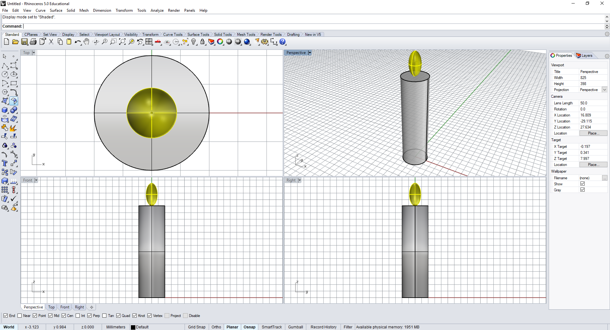
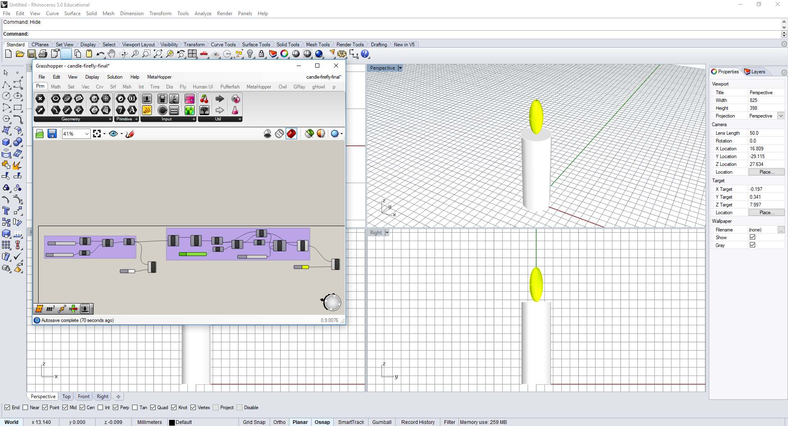
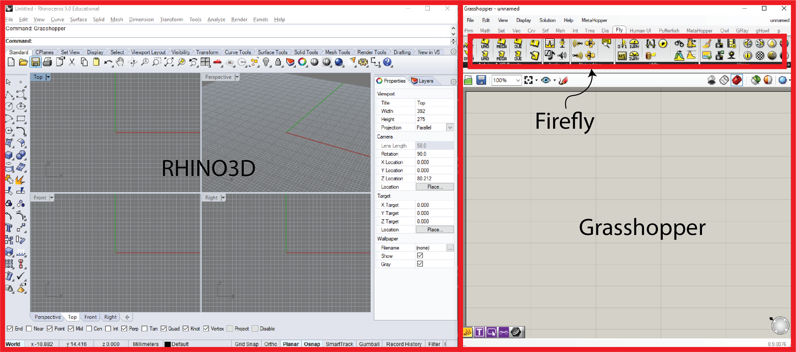
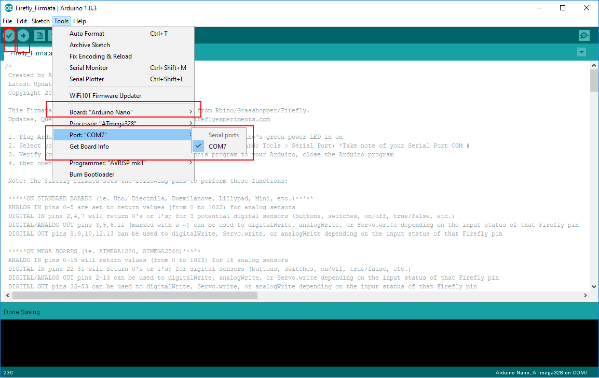

6.810 Engineering Interactive Technologies (fall 2018)
3D Modeling Lab (Rhino3D, Grasshopper and Firefly)
Rhino, Grasshopper and Firefly installation instructions for Windows PC are at the bottom of this tutorial. While Rhino and Grasshopper versions are available for Mac, Firefly plugin is not. If you wish to install these programs on your personal laptops, follow the instructions provided at the bottom. You will also need to have installed Arduino IDE for this tutorial.
We think the entire tutorial can be done in 60-70 minutes, but if you need longer, upload 3 is only due next friday in case you get stuck.
End of class: Upload 1 (Deadline: Oct 19, 2.30pm)
Once you complete Task 1 in this tutorial, take screenshots of your your 3D candle and upload it to Gradebook

End of class: Upload 2 (Deadline: Oct 19, 2.30pm)
Once you complete Task 2 in this tutorial, make a (i) video of the parametric candle (ii) .gh file of your grasshopper visual code along with (iii) screenshots of your script to Gradebook

Next Week: Upload 3 (Deadline: Oct 24, 1 pm)
Once you complete Task 3,4 and 5 in this tutorial, make a (i) video of the virtual parametric candle changing flame based on wind sensor, and add (ii) .gh file of your grasshopper visual code along with (iii) final .STL file of your exported 3D model and (iv) screenshots of your script to Gradebook

Goal:
We will learn to interface between digital 3D modeling environments and physical interfaces. We are going to connect the arduino wind sensor+led circuit (that you built a few weeks ago) with the digital 3D modeling software Rhino3D and its plugins (Grasshopper and Firefly).
There are many advantages of the digital-physical interfacing:
- Real-world sensor data can be used for controlling 3D models in the virtual world
- Virtual models can be used to control or actuate physical interfaces in the real world
(Note: There are multiple resources listed at the end of this tutorial for more information on 3D parametric modeling using Rhino, Grasshopper and other plugins.)
Before we start, check if you have all your components of your original wind sensor + LED circuit work correctly.
Now let's forget the circuit for a bit and dive into the digital world.
Background:
While there are multiple 3D modeling softwares available (like Solidworks, OnShape, AutoCAD, Sketchup), we will be using Rhino3D for our lab. It is very easy to learn, intuitive to use and has over 100 plugins (together called Rhino-zoo! ). The applications vary from architecture design, to FEM analysis, to Neural networks for design optimization etc. In particular, the popularity of Rhino3D stems from the plugin called grasshopper which allows for parametric visual programming (as you will learn today). We will also be using Firefly (which is a plugin for grasshopper), which allows the parameters of design to be controlled by arduino inputs/outputs.
In short, we use:
- Rhino3D : for basic 3D modeling
- Grasshopper : for parametric 3D modeling
- Firefly : for interfacing with arduino input/outputs

Here's what we will design and build today:
- Task 1: First familiarize yourself with Rhino3D and 3D model a candle manually using regualar 3D modeling tools.
- Task 2: Familiarize yourself with the Grasshopper plugin and design a parametric candle using visual programming that can change height and diameter and flame size.
- Task 3: Interface with the Firely plugin and control the flame of the parametic candle using the wind sensor (so when your LED turns off, the virtual flame also turns off)
- Task 4: Change the parameters of the candle design and export STL file for 3D printing
- Task 5: (Optional): Download a candle model from free open source CAD database and control that digital candle using the wind sensor.
Task 1: Familiarizing with Rhino3D and modeling candle (20-25 minutes)
This is the hardest task since 3D modeling is pretty complex, please hang in there it will get easier later :)!
If all the plugin installations are setup properly on your computer, you should be able to open Rhino6 using the icon on the desktop on the EDS lab computers.
It opens 4 viewports and looks like any typical CAD software.
We will 3D model a simple candle to familiarize us with the interface.
All steps are also illustrated in the video below the text bullets.
- Set all your viewports to "shaded" ("ghosted" also works).
- Zoom in and zoom out is using scroll of mouse. Pan is by pressing the center mouse button.
- Set the units of your file to 'inches' (you can also use centimeters or millimeters if you feel more comfortable with this). To do this, type “units” in the command line and then select the units you want to work with.
- 3D model the candle base: Refer the video for 3D modeling of the candle base. The commands we will use are: circle, extrusion, cap
- 3D model the flame: Commands to use are : eliipse, line, revolve
- Note: You can either model using commands in the command window (top white bar) or using the toolbars on left
- Now that you have the candle modelled, we will use some transformations to change the shape of the candle using: Scale, Scale1D, Scale2D and also change the color properties.
- Rhino3D UI tips:
- Switch "Osnap" ON at the bottom toolbar and make sure the box for "Center" is checked. This will help you snap on the center of the circle while 3D modeling.
- You can maximize a viewport by double clocking on the viewport name
Upload 1: Once you have modeled the candle, save the file from File -> SaveAs and upload it to your gradebook with a screenshot (you can also use your cellphone and take a snap of the display).
Task 2: Familiarizing with Grasshopper and modeling "parametric" candle (40-50 minutes)
Open a new file (File -> New -> then click the 'No Template' button) and type “grasshopper” in the command line and it will open a new window.
This new window is your visual programming environment - like a visual script. If you create a 3D model (lets say a sphere, the 3D model will show up in the Rhino3D window, but you will be able to manipulate it realtime through grasshopper code, as we will see in next steps.
You also have sliders and sequence generators that you can use to control parameters (hence the name “parametric” design)
Let's try a simple addition script, first with discrete numbers and then with sliders (again see the video below).
- Switch "Osnap" ON at the bottom toolbar and make sure the box for "Center" is checked. This will help you snap on the center of the circle while 3D modeling.
- You can maximize a viewport by double clocking on the viewport name
- If you double click on the canvas, you can search a component by typing
- The preview of grasshopper can be switched on and off by clicking the center button on mouse and clicking the "preview off" icon
- You can enable/disable a component execution by clicking the center button on mouse and clicking the "enable/disable" icon
Now you can use the output of the addition as the input parameter for 3D sphere
Now that we know how to make parametric forms, we will make a parametric candle. You can start with a new grasshopper file. We will follow the same design steps that we did for Rhino3D candle, except this time through grasshopper. First, lets start with the candle base.
Next, we will make the candle flame. This part is a little tricky because the location of the flame depends on the top of the candle (which keeps changing). So, we will have to first locate the centre of the top of the candle face and then add the vertical ellipsoidal geometry. Once we have modeled this, we will change the color, scale and other properties of the flame.
Upload 2: Once you have modeled the parametric candle, save the file and upload it to your gradebook along with short video and screenshots. Again use your phone to make a quick capture if you don't have a screen cast software.
Task 3: Interfacing Arduino with Firefly to blow out the digital candle with the physical wind sensor (20-30 minutes)
Now we will start the most fun part. But before we start controlling our arduino board with Firefly, we need to first upload a arduino script that will allow this communication. Follow the next steps carefully to avoid debugging errors.

Step 7: Now you can change any parameter of the candle based on input from the serial plotter such as radius of the candle, height, color, etc. Play around a little and make your own versions of candle adapting to the wind sensor. Upload 3. Video of the color and flame going on/off based on input from wind sensor
Optional (you can also change the size/scale of the candle using the input from the wind sensor)
Task 4: Exporting .STL file from Grasshopper/Rhino3D.
Because grasshopper is only simulating the visualization, your model doesn't truly exist in the Rhino UI until you "bake" a version you want permanent. Here is how you bake a certain version of the model and export it into .STL file for 3D printing. To bake a component from grasshopper, you Right click onthe component in gh and click "Bake" and select the layer you want the geometry to be baked in. For exporting the .STL file, go to Rhino, now select the geometry you want to export, go to File --> Export Selected.Upload 4: Export your desired version of the parametric candle in .STL format and upload in the gradebook.
Task 5: (Optional) Modifying 3D models from online sources
You can also modify existing 3D models in grasshopper to suit your preferences. Download a model from thingiverse or any other source, and change it in grasshopper and make a version you would want to 3D print. (Hint: to modify an exsiting geometry through gh, you can reference it by selecting "Geometry" --> Right click --> "Select One Geometry" --> Clock on the geometry in the Rhino UI)Upload 5: Upload a new version of candle.
----------------------------------------------------------------------------------------------------------------
Installation Instructions for Windows:
Additional Resources for learning Rhino3D, Grasshopper and other plugins of the Rhino zoo.